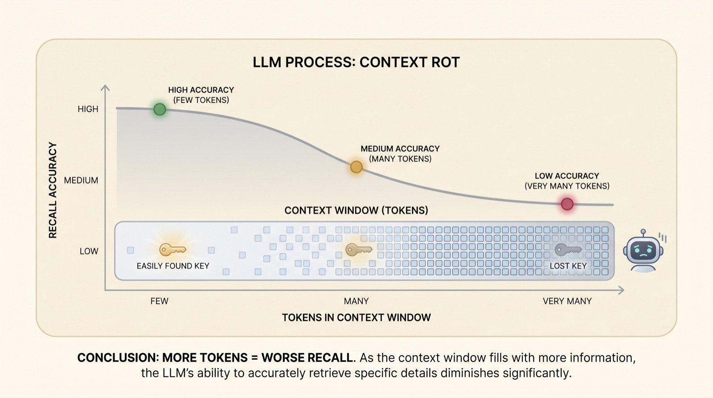
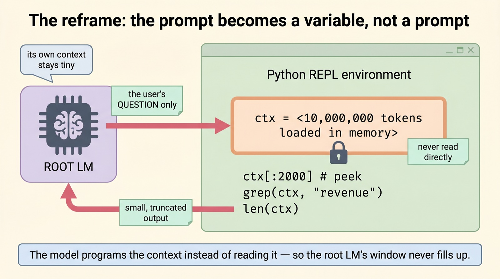
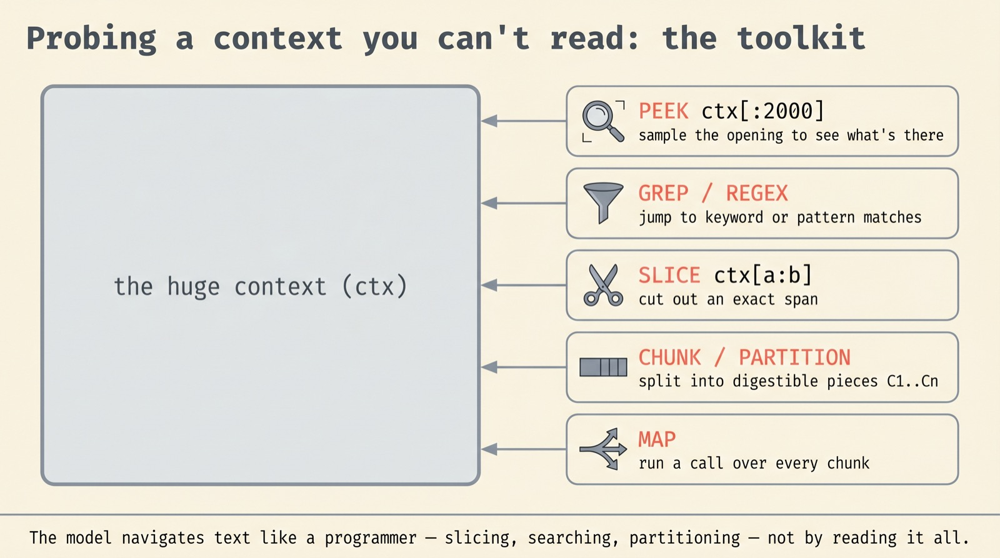
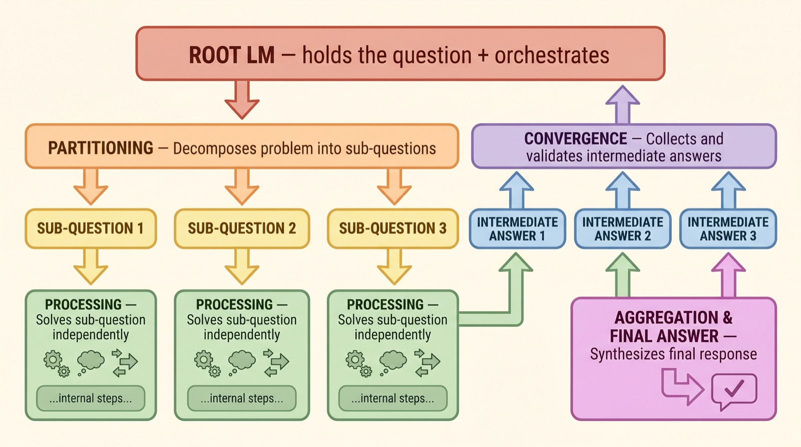
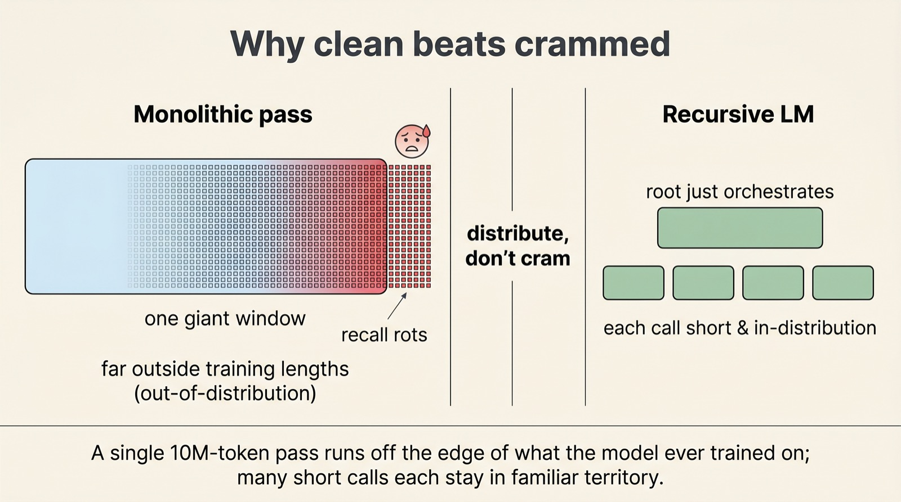
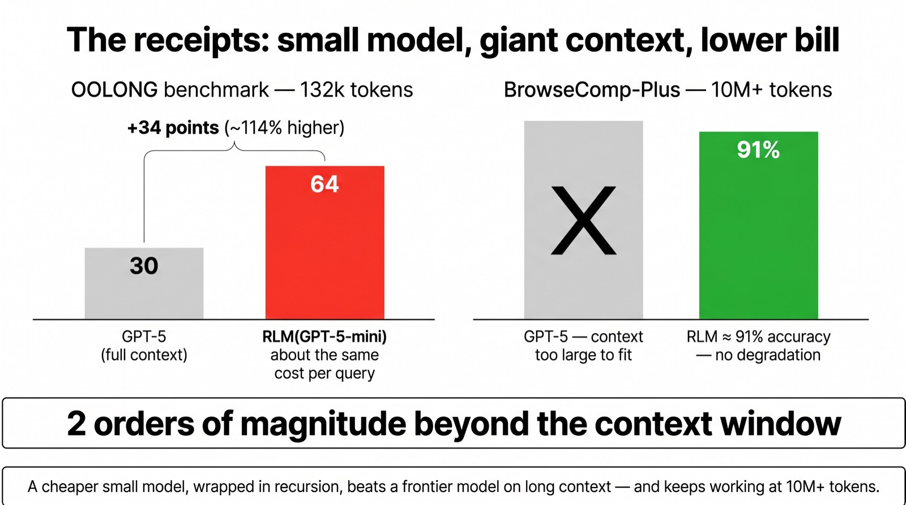

When the context window stops being the limit
Recursive
Language Models
What if a model never read your million-token prompt at all — but stored it as a variable, wrote code to probe it, and recursively called smaller copies of itself on just the pieces that mattered? That one move lets a cheaper model out-read a frontier one.
From Zhang, Kraska & Khattab (MIT CSAIL, late 2025). Instead of fixing context rot with a bigger window, RLMs sidestep it: the long prompt lives in a Python REPL, and the model decides — at test time — how to slice, search, and recurse over it. The reach is roughly two orders of magnitude beyond the model's own context window.
Scroll to begin.
↓
The wall every long prompt hits
For three years the story of large language models has been a story about bigger windows. Four thousand tokens became thirty-two thousand, then two hundred thousand, then a million. The promise was simple and seductive: paste in the whole codebase, the entire deposition, every email from the quarter — and just ask. If the model can see everything, surely it can answer anything.
It turns out that seeing everything is not the same as understanding it. As you push more tokens into a single forward pass, the model gets quietly, measurably worse at finding the fact you actually need. Anthropic gave the effect a memorable name: context rot — "as the number of tokens in the context window increases, the model's ability to accurately recall information from that context decreases." The window is full, but attention is spread thin.
You can watch it happen. Hide a single sentence — the proverbial needle — inside a haystack of a few thousand tokens and the model finds it every time. Bury the same sentence in two hundred thousand tokens and it starts to slip. The bar fills up; the recall curve bends down.

So the field had a choice. Option one: keep fighting the architecture — better positional schemes, sparser attention, longer training — to make the giant pass degrade a little more gracefully. Option two, the one we're here for: stop forcing the model to read everything at once.
What if the prompt were a variable?
Here is the reframe that makes Recursive Language Models work, and it is small enough to fit in a sentence: the long context is not a prompt the model must read — it's a variable the model can query.
Concretely, the entire context is loaded into the memory of a Python REPL — an interactive notebook — as a single variable, say ctx. The root model is not handed those millions of tokens. It is handed only the user's question and a live coding environment, and told: the answer is somewhere inside ctx; write code to go find it.
Think about what that changes. A normal model reads the whole haystack and hopes to remember the needle. The root RLM never sees the haystack. It writes ctx[:2000] to peek at the opening, runs grep(ctx, "Q3 revenue") to jump to the relevant lines, checks len(ctx) to gauge the size — and only short, truncated outputs of those commands ever come back into its own context.

When it has the answer, the model emits a FINAL(answer) tag — or FINAL_VAR(name) if the answer is something it has already assembled inside the notebook. From the outside, none of this is visible. You call it like any other model: rlm.completion(messages). The recursion hides behind the same clean API you already use.
A toolkit for reading without reading
Once you accept that the model is a programmer poking at a variable rather than a reader scanning a page, a small but powerful toolkit falls out naturally. None of it is hand-coded into a rigid pipeline; the model chooses which tool to reach for, at test time, by writing ordinary Python.
Peek — sample the first couple thousand characters to learn what kind of document this even is. Grep / regex — instead of fuzzy semantic retrieval, look for literal keywords and patterns, the way a developer searches a log. Slice — once it knows roughly where the answer lives, cut out the exact span with ctx[a:b]. Chunk / partition — split an unwieldy block into digestible pieces. Map — run the same operation across every chunk.

This is the quiet superpower of the REPL framing. A retrieval system has to embed the whole corpus in advance and hope its similarity scores surface the right passage. The RLM can just search for the word. If you ask about "the indemnification clause," it greps for "indemnif" and lands on the paragraph — no vector database, no chunking strategy decided up front, no semantic drift.
The recursive leap
So far the root model can search and slice. But what happens when a single chunk is itself too big to reason about — a hundred pages that all look relevant? This is where the "recursive" in Recursive Language Models earns its name.
The environment exposes one more tool: llm_query(question, chunk). When the root model calls it, it spawns a fresh language model — in the paper, often a cheaper one like GPT-5-mini — on just that chunk, with just that sub-question, in a brand-new clean context. That sub-model reads its small slice, answers, and hands a short summary back up. The root model collects those mini-answers and combines them.
It is, quite literally, a model deciding to call a model. The root orchestrates; the children do the close reading; nobody ever holds the whole thing at once. In the current implementation the recursion goes one level deep — depth 1 — but the authors note that going deeper "is a relatively easy change."

That last phrase is the whole philosophy, and it is worth slowing down for. An agent framework is a human's guess at how to decompose a task — a fixed graph of steps an engineer designed. An RLM hands the decomposition back to the only thing that actually knows how hard each piece is: the model.
Why clean beats crammed
Why should any of this beat simply giving a powerful model the whole context? The deepest reason is about distribution. A model is trained on sequences up to some length. A ten-million-token prompt is not just large — it is off the map, far outside anything the model saw in training. Asking it to reason there is asking it to extrapolate.
The RLM keeps every individual call short. The root model's window holds a question and a few command outputs. Each sub-model's window holds one tidy chunk. Every single forward pass stays in the comfortable, well-trained regime — the regime where models are sharp. The length problem is dissolved into many length-safe problems.

There is a second, lovely benefit: you can read the reasoning. Because the model's strategy is just executed Python, every grep, every slice, every recursive call is logged. Unlike a black-box thousand-token internal monologue, you can see exactly how the model chose to attack your document — which is a gift for debugging and for trust.
None of this is free. Each recursive call is blocking and skips prefix caching, so latency is unpredictable — a query can finish in seconds or grind for minutes depending on how the model partitions. And the model still stumbles on tasks that need exhaustive counting across the whole context, where you genuinely cannot afford to miss a single piece. The trick buys breadth of reach, not omniscience.
The receipts
The claim sounds almost too tidy — a cheap model wrapped in a loop beating a frontier model — so the numbers matter. On OOLONG, a long-context reasoning benchmark, at around 132k tokens, RLM(GPT-5-mini) scored about 34 points higher than GPT-5 itself — better than double the performance — at roughly the same cost per query. Push to 263k tokens and the wrapped small model still led by about 15 points, and was now cheaper per query on average.
The second benchmark, BrowseComp-Plus, is where the scale becomes vivid. Its tasks run to roughly 6–11 million tokens of input — so much that the base model simply cannot be run on them; they do not fit. The RLM variant reached about 91% accuracy and, crucially, did not degrade as the token count climbed past ten million. Where the recursion was switched off as an ablation, accuracy dropped — confirming the recursive calls, not just the REPL, were doing the work.

What this unlocks
The reason RLMs feel significant is that they add a new axis to the toolbox. We already had two ways to spend extra inference: let a model think longer (reasoning) and let it take actions in a loop (agents). Recursion is a third — spend compute on decomposing the input itself, with the model in charge of the decomposition.
It is already spreading. In early 2026 Prime Intellect released RLMEnv, an environment for training long-horizon agents on exactly this recursive-context pattern — turning the test-time trick into something you can optimize for directly. The natural next steps write themselves: recursion deeper than one level, prefix caching to tame the latency, and learned policies for when to grep versus when to recurse.
But the bigger idea is the one to carry away. For years we treated the context window as a container to be enlarged. Recursive Language Models treat it as a filesystem to be navigated — and the moment you make that switch, "how long is your context window?" stops being the question that matters. The model brings its own scissors.
grep, the figures did their job.